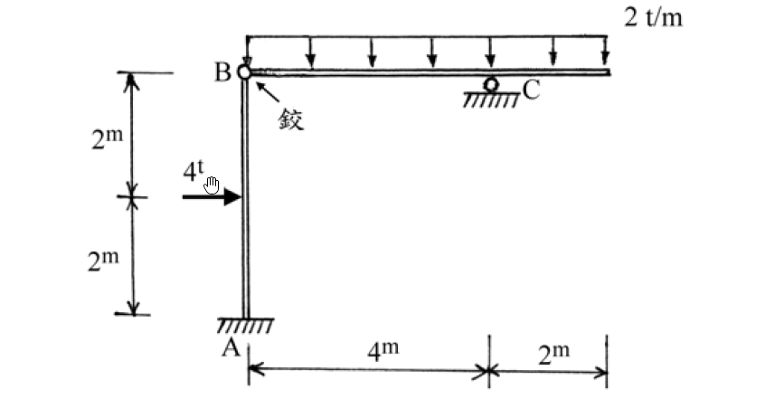

考題編號：[SA-2004-1]
主分類： SA-U1 靜定結構分析
副分類：
分析法： 靜定分析
標籤： 靜定剛架 剪力圖 彎矩圖 內部鉸
1. 原始題目重述 (Problem Restatement)
一、 試分析如圖所示之靜定結構系統，並繪製剪力圖及彎矩圖。其中A 端為固定支承；B 為鉸接點；C 為滾支承。（25 分）
結構包含一垂直柱 AB 與一水平梁 BCD。A端為固定端，B點為內部鉸接。水平梁總長 6m，在距B點 4m 處設有滾支承 C，右側外伸 2m 至自由端 D。載重包含：柱 AB 中點 (距 A 端 2m) 有一水平向右之 4t 集中力；水平梁全線承受 2 t/m 之向下均布載重。

圖說：結構為 A端固定，B端內部鉸接，C端滾支承。柱AB長4m，受中點水平力4t；梁BCD總長6m (BC=4m, CD=2m)，受2t/m均布載重。
2. 考題核心精神與出題者意圖 (Core Concepts & Examiner's Intent)
本題為經典的靜定剛架分析。核心精神在於測驗考生能否正確運用「內部鉸接點 (Hinge)」作為分離體 (Free Body Diagram) 的切斷點，將複雜結構拆解為單純的靜定柱與梁來求解支承反力與鉸接傳遞力。
出題者刻意將滾支承放置於水平梁上，且梁無任何水平外力，意圖測驗考生是否能敏銳察覺鉸接點的水平傳遞力必然為零，進而發現「柱段受力點以上的部分完全無剪力與彎矩」的有趣現象。
3. 解題戰略地圖與陷阱分析 (Strategic Roadmap & Trap Analysis)
解題戰略：
- 將結構於 B 點鉸接處拆解為「水平梁 BCD」與「垂直柱 AB」兩個分離體。
- 先分析水平梁 BCD，利用 $\sum M_B = 0$ 求解滾支承反力 $C_y$，再由 $\sum F_y = 0$ 求解鉸接點垂直傳遞力 $B_y$。
- 由水平梁 $\sum F_x = 0$ 可得鉸接點水平傳遞力 $B_x = 0$。
- 接著分析垂直柱 AB，將求得之 $B_x, B_y$ 反向施加於 B 點。利用 $\sum F_x, \sum F_y, \sum M_A = 0$ 求得固定端 A 之三個反力。
- 分段寫出剪力與彎矩方程式，繪製 SFD 與 BMD，特別注意利用 $V(x)=0$ 定位出梁段的最大正彎矩位置。
陷阱分析：
- 柱段上半部零內力陷阱：因鉸接點水平傳遞力 $B_x = 0$，柱 AB 在受力點 ($y=2\text{m}$) 以上的區域，剪力與彎矩皆為零。考生若未確實繪製分離體，極易慣性假設全柱皆有彎矩分佈。
- 最大正彎矩位置：梁段的最大彎矩並不在中央，必須透過設定剪力 $V(x)=0$ 來精確定位。
- 符號與繪圖約定：彎矩圖繪製通常習慣畫於受拉側。柱段需仔細判斷受拉面 (本題下半柱為左側受拉)；懸臂外伸段為上側受拉。
3.5 變數層次分析 (Variable Hierarchy Analysis)
最終目標
繪製靜定剛架系統之剪力圖 (SFD) 及彎矩圖 (BMD)。
本題關鍵公式（依計算順序）
$$ \sum M = 0, \quad \sum F_x = 0, \quad \sum F_y = 0 $$
$$ V(x) = \int -w(x) dx $$
$$ M(x) = \int \boxed{V(x)} dx $$
L1：題目直接給定
- 符號 ∣ 數值 ∣ 說明
- $L_{AB}$ ∣ $4\text{ m}$ ∣ 柱 AB 總高
- $L_{BC}$ ∣ $4\text{ m}$ ∣ 梁 BC 段跨度
- $L_{CD}$ ∣ $2\text{ m}$ ∣ 梁外伸段 CD 長度
- $P$ ∣ $4\text{ t}$ ∣ 柱中點水平集中載重
- $w$ ∣ $2\text{ t/m}$ ∣ 梁向下降均布載重
L2：需知識點推導
步驟一：分離體與支承反力
- 符號 ∣ 公式／來源 ∣ 卡關?
- $C_y$ ∣ $\sum M_B^{\text{right}} = 0$ ∣
- $B_y$ ∣ $\sum F_y^{\text{right}} = 0$ ∣
- $B_x$ ∣ $\sum F_x^{\text{right}} = 0$ ∣
- $A_x$ ∣ $\sum F_x^{\text{left}} = 0$ ∣
- $A_y$ ∣ $\sum F_y^{\text{left}} = 0$ ∣
- $M_A$ ∣ $\sum M_A^{\text{left}} = 0$ ∣
步驟二：梁段與柱段內力
- 符號 ∣ 公式／來源 ∣ 卡關?
- $V_{BC}(x)$ ∣ $B_y - w x$ ∣
- $M_{BC}(x)$ ∣ $B_y x - \frac{1}{2} w x^2$ ∣
- $M_{\text{max}}^+$ ∣ $M_{BC}(x \text{ at } V=0)$ ∣
- $M_C$ ∣ $-\frac{1}{2} w L_{CD}^2$ ∣
- $V_{AB}(y)$ ∣ 取決於 $A_x$ 與 $P$ ∣
- $M_{AB}(y)$ ∣ $M_A - A_x y$ ∣
L3：深層知識（不懂就卡住）
- 知識點 ∣ 說明 ∣ 卡關?
- 內部鉸接點 (Hinge) 特性 ∣ 鉸接點無法傳遞彎矩，可作為拆解分離體 (Free Body) 的斷點，提供 $\sum M = 0$ 的額外方程式。 ∣
- 滾支承之反力限制 ∣ 滾支承僅能提供垂直反力，無水平反力，故本題梁段無水平載重時，內部鉸接點之水平傳遞力 $B_x = 0$。 ∣
- 剪力與彎矩之微分關係 ∣ 剪力為零處，彎矩有極值 (最大正彎矩)。需透過 $V(x)=0$ 找出該位置。 ∣
4. 步驟化詳細計算過程 (Step-by-Step Detailed Calculation)
Step 1：拆解分離體與求解支承反力
將結構於內部鉸 B 拆解，先取右側水平梁 BCD 為分離體：
- 水平梁全長 $6\text{ m}$，承受向下均布載重 $w = 2\text{ t/m}$，總等效集中力 $W = 2 \times 6 = 12\text{ t}$，作用於距 B 點 $3\text{ m}$ 處。
-
對 B 點取彎矩平衡求 $C_y$：
$$ \sum M_B = 0 \implies C_y \times 4 - 12 \times 3 = 0 $$
$$ 4 C_y = 36 \implies \boxed{C_y = 9\text{ t} (\uparrow)} $$ -
垂直方向力平衡求 $B_y$：
$$ \sum F_y = 0 \implies B_y + C_y - 12 = 0 $$
$$ B_y + 9 - 12 = 0 \implies \boxed{B_y = 3\text{ t} (\uparrow)} \text{ (作用於梁上)} $$ -
水平方向力平衡求 $B_x$：
$$ \sum F_x = 0 \implies \boxed{B_x = 0} $$
再取左側垂直柱 AB 為分離體：
- 承受外部水平力 $P = 4\text{ t} (\rightarrow)$ 於距 A 端 $2\text{ m}$ 處。
- B 點承受來自梁之反作用力：$B_x' = 0$、$B_y' = 3\text{ t} (\downarrow)$。
-
水平方向力平衡求 $A_x$：
$$ \sum F_x = 0 \implies A_x + 4 + B_x' = 0 \implies A_x + 4 = 0 \implies \boxed{A_x = -4\text{ t} \text{ (即向左 4t)}} $$ -
垂直方向力平衡求 $A_y$：
$$ \sum F_y = 0 \implies A_y - B_y' = 0 \implies A_y - 3 = 0 \implies \boxed{A_y = 3\text{ t} (\uparrow)} $$ -
對 A 點取彎矩平衡求 $M_A$：
$$ \sum M_A = 0 \implies M_A - 4 \times 2 - B_x' \times 4 = 0 \implies M_A - 8 - 0 = 0 \implies \boxed{M_A = 8\text{ t-m} (\text{逆時針})} $$
Step 2：計算梁段 (BCD) 之剪力與彎矩
設 $x$ 為自 B 點向右之距離 ($0 \le x \le 6\text{ m}$)：
-
BC 段 ($0 \le x < 4$)：
$$ V(x) = B_y - wx = 3 - 2x $$
$$ M(x) = B_y x - \frac{1}{2}wx^2 = 3x - x^2 $$
當 $V(x) = 0$ 時發生最大正彎矩：
$$ 3 - 2x = 0 \implies x = 1.5\text{ m} $$
$$ \boxed{M_{\text{max}}^+ = M(1.5) = 3(1.5) - (1.5)^2 = 2.25\text{ t-m} \text{ (下側受拉)}} $$
在 C 點 ($x=4$) 剛左側：
$$ V_C^{\text{左}} = 3 - 2(4) = -5\text{ t} $$
$$ M_C = 3(4) - 4^2 = -4\text{ t-m} \text{ (上側受拉)} $$ -
CD 外伸段 ($4 < x \le 6$)：
$$ V(x) = V_C^{\text{左}} + C_y - w(x-4) = -5 + 9 - 2(x-4) = 12 - 2x $$
端點檢核：於 $x=6$ 時 $V(6) = 12 - 12 = 0$，符合自由端條件。
此段亦可由自由端 D 向左計算，設 $x'$ 為距 D 點向左之距離：
$$ V(x') = w x' = 2 x' $$
$$ M(x') = -\frac{1}{2} w (x')^2 = -(x')^2 $$
於 C 點 ($x'=2$)：$M_C = -2^2 = -4\text{ t-m}$，計算結果一致。
Step 3：計算柱段 (AB) 之剪力與彎矩
設 $y$ 為自 A 點向上之距離 ($0 \le y \le 4\text{ m}$)：
-
下半段 ($0 \le y < 2$)：
剪力 $V(y) = 4\text{ t}$ (左側推力產生之剪力)
彎矩 $M(y) = M_A - A_x y = 8 - 4y$ (左側受拉為正)
在受力點 ($y=2\text{ m}$)：$M(2) = 8 - 8 = 0$ -
上半段 ($2 < y \le 4$)：
剪力 $V(y) = 4 - 4 = 0$
彎矩 $M(y) = 0$策略註解：因頂端 B 點無水平傳遞力 ($B_x=0$)，受力點以上的柱段並無承受任何水平方向的力量，故無剪力與彎矩。
Step 4：剪力圖 (SFD) 及彎矩圖 (BMD) 總結
- 剪力圖 (SFD)：
- 柱 AB：$0\sim2\text{m}$ 為 $+4\text{t}$ (矩形)；$2\sim4\text{m}$ 為 $0$。
- 梁 BCD：由 B 點 $+3\text{t}$ 直線遞減至 C 點左側 $-5\text{t}$ (於 $1.5\text{m}$ 處穿過零點)；C 點因 $9\text{t}$ 向上反力跳升至 $+4\text{t}$，再直線遞減至 D 點 $0$。
- 彎矩圖 (BMD) (繪於受拉側)：
- 柱 AB：於 A 端為 $8\text{ t-m}$ (畫於左側)，直線遞減至 $2\text{m}$ 處為 $0$；$2\sim4\text{m}$ 皆為 $0$。
- 梁 BCD：B 點為 $0$，呈拋物線於 $x=1.5\text{m}$ 達最大正彎矩 $2.25\text{ t-m}$ (畫於下側)，交於 $x=3\text{m}$ 為 $0$，至 C 點達 $-4\text{ t-m}$ (畫於上側)；CD 段亦為拋物線遞減至 D 點 $0$。
5. 關鍵爭議點與進階探討 (Critical Issues & Advanced Discussion)
- 無內力的陷阱區段：本題中，柱之上半部無剪力與彎矩內力，這在直覺上極易被考生忽略。必須堅持嚴謹的靜力平衡原則：由於鉸接點 B 不能傳遞彎矩，且梁上無水平載重導致滾支承 C 唯一的限制使 $B_x=0$，因此柱頂B點無任何水平力，導致負載以上的柱段如同懸臂之無載重段，內力為零。
- 作圖習慣與受拉側標示：結構學實務中，彎矩圖強烈建議繪製於「受拉側 (Tension Side)」，能直觀對應鋼筋混凝土結構中的主筋配置位置。本題柱 AB之下半段受拉側在左，梁 BC 段最大正彎矩受拉側在下，而支承 C 處負彎矩受拉側在上。作答時除了標註數值，繪製於正確側邊是拿滿分的關鍵。
- 分離體的重要性：此題型強調「以鉸接點拆解」及「逐段檢核邊界條件」的紮實功夫。若企圖直接硬解全結構的平衡方程，雖仍可得出反力，但在繪製內力圖時極容易發生符號錯亂，拆解分離體(FBD)始終是降低錯誤率與釐清觀念的最佳實務。